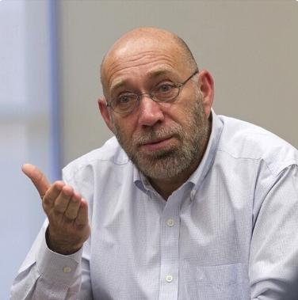
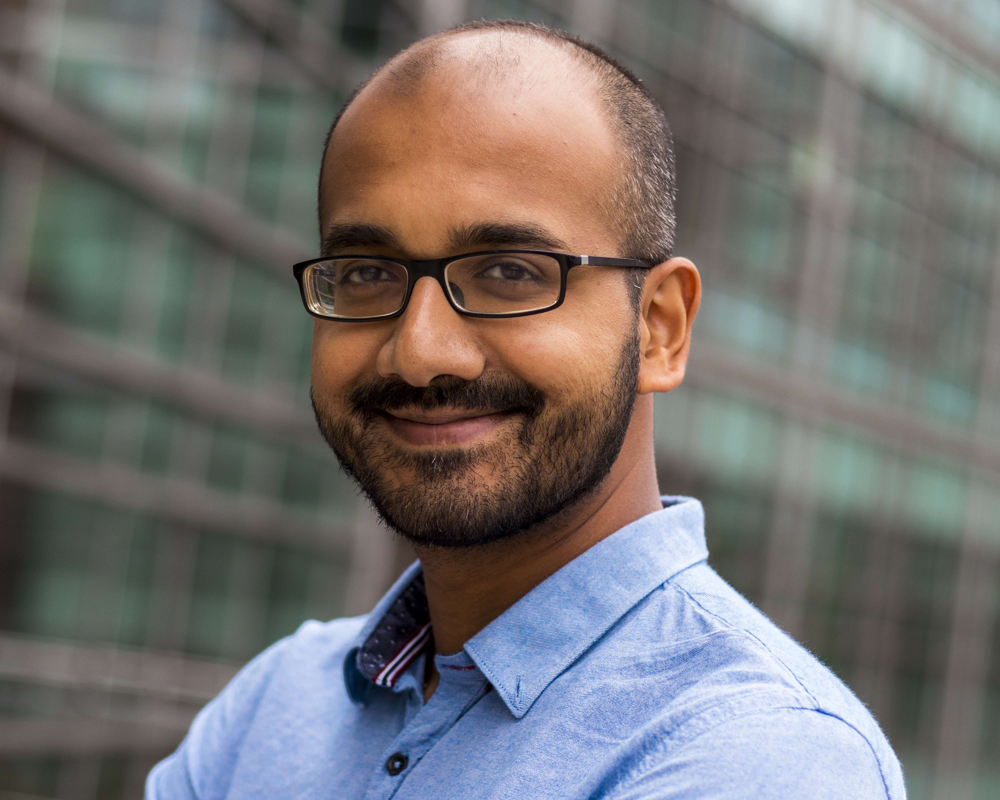
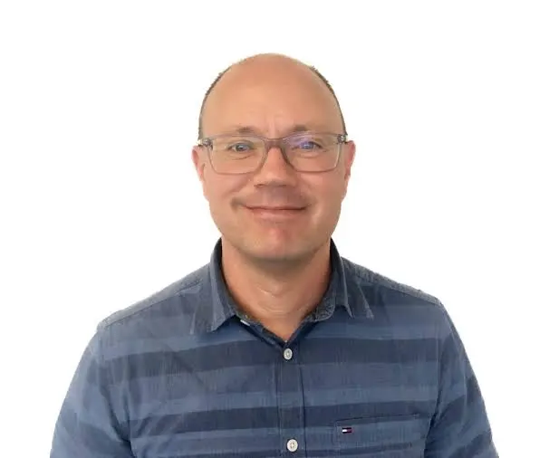
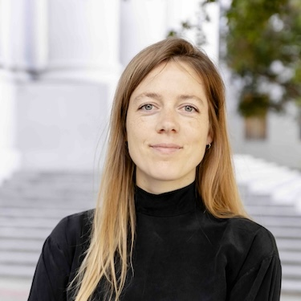

Dan Roth
University of Pennsylvania
CoLM 2026 Workshop
October 9, 2026 · Hilton Union Square · San Francisco, USA
Large language models are enabling a new paradigm that goes beyond NL2SQL into full NL2Data workflows: understanding intent, discovering relevant data, orchestrating tools, and producing grounded insights across heterogeneous sources.
NL2Data 2026 focuses on the full lifecycle: semantic representation, data discovery, trustworthy analytics, and evaluation. The workshop brings together NLP, AI, and data systems researchers and practitioners to build reliable, scalable, and democratized data access systems.
Call for Papers
We welcome submissions on topics including, but not limited to:
We invite submissions up to 9 pages following CoLM formatting guidelines. Reviews will be double-blind via OpenReview. Workshop publications are non-archival; accepted papers will be featured on the workshop website and presented as posters.

University of Pennsylvania

UC Berkeley

Megagon Labs

Columbia University / Arklex.ai

Oracle AI

Oracle AI

Oracle AI

Oracle AI

Oracle AI

University of Arizona

University of Edinburgh

Arizona State University

Centrum Wiskunde & Informatica
Snowflake